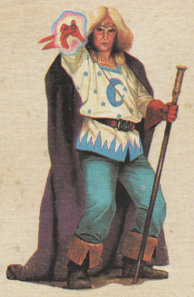
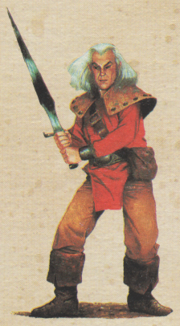
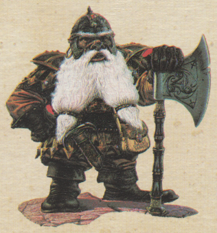
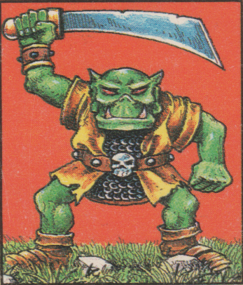
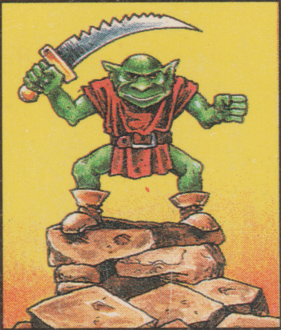
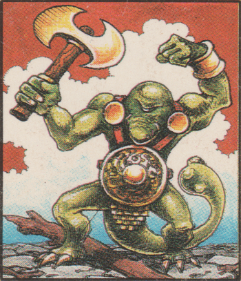
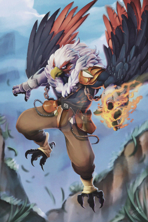
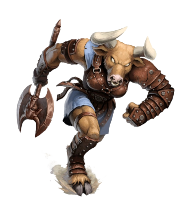

Our story takes place in a fantasy world where magic once dominated, but science is growing. While Androphet's Empire was forged in a bloody history of battle, now is a rare period of peace that has allowed for the foundation of ~the Academy: a school of Combat, Magic and Science~.
You are all students about to attend the Academy. As our story begins you're enjoying your summer break after having completed primary school. You've all become very close friends there and are excited to attend the prestigious school of higher-learning.
Centuries ago three races came together to found the Empire that we know today. These races have worked as friends for so long that they've blended together into the tapestry of today's society. They are very common throughout the Empire and you are very likely to come across any of them on your journeys.
The humans live in the northwest of the main continent and their lands are at the heart of the Empire today. On average they are medium-tall in height with varying skin colours. They make well rounded versatile warriors that can be equally skilled in physical or magical combat.

Originally from the continent across the western sea from the Main one, the elves were the first to ally themselves with the humans. This alliance was the seed for what would later become the Empire. This ancient race has pointed ears and varied skin colours similar to humans, but are generally taller than them. They are generally a peaceful race, but aren't afraid to fight for what is right and tend to favour magical combat.

The land of the dwarves is in the southwest of the Main continent. Their joining up with the humans and elves was the catalyst for the foundation of the Empire, and their borders with the humans have all but disappeared in the eons since then. They may be short and stubby, but are far stronger than their small demeanour would suggest. Typically they are not a fan of magic and will prefer to make use of their great strength in physical combat instead.

The lands on the eastern borders of the Empire are home to the green skinned races dominated by the orcs. For ages the land of the orcs were at war with the humans, and only since the fall of the necromancer Fardok has an unsteady peace treaty been formed with the Empire. Since then a few have braved the border crossing into the Empire, but the memory of the violence is still relatively fresh in people's minds so they are often treated with mistrust.
The medium height orcs have the largest population and are generally in control of those lands. They have earned the reputation of being fierce in physical combat.

The gnome have nearly as large of a population as the orcs, but being weaker their race has become subservient to them. They are shorter than the orcs, but very fast and have learn to use magic to compensate for their lack of raw physical strength.

The fimir are much taller and stronger than the orcs, and even the humans. However their smaller population and lack of intelligence has allowed the orcs to dominate over them. They are generally well rounded in combat but will typically favour physical combat over magical due to their strength.

Some races have chosen to keep more to themselves and have had little interaction with the Empire. Because of this less is known of their societies. Nevertheless the Empire is on good terms with them, and you may occasionally come across a few of their members that have wandered into the lands of the Empire on unknown adventures.
The hawkmen are a medium-tall, lightweight and nimble half-bird, half-human race. Their lite stature makes them physically weak, but allows them to fly. Because of this they tend to favour magical combat over physical melee.

The minatores are renown for their near complete lack of intelligence, but these tall furry beasts more than make up for it in raw physical strength. They prefer to charge in swinging and embody the old adage: hit first and ask questions later
. They seem completely unable to wield magic, but weary are those that must face them in melee combat.
